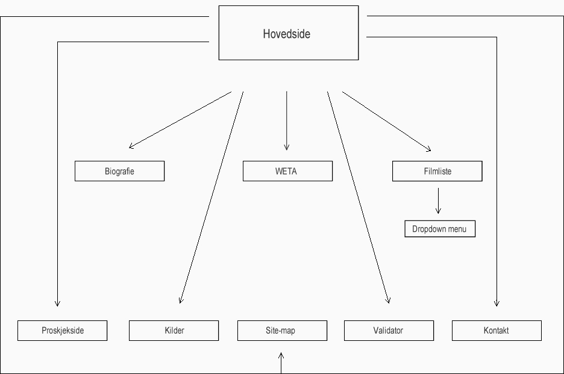

.
Begrunnelse for designvalg
Vi har selv lagt en egen header for websiden vår. Design av websiden skal være brukervennlig og så mulig som minimalistisk. Menyen som vi har laget, er ganske enkel å navigere. Målet er å ha oversiktelige linker, tekst og overskrifter, derfor har vi valgt å bruke svart tekst og lyse grå bakgrunn, slik at mørk tekst vises bedre. Man kan slippe å bruke tastaturet for å navigere websiden. Alle Bilder, bort sett fra header-en, er sort hvite, som passer for alle bl.a. de som er fargeblind. Hele websiden er skrevet med vanlig teksttype, arial, som skal være både oversiktelig og forståelig, i andre ord lesbart.
Type nettsted
Websiden skal inneholde informasjon om regissøren og produsenten Peter Jackson. Her skal man finne konkret informasjon som man trenger å vite om Peter Jackson.
Målgruppe
Målgruppen er alle personer, uavhengig av alderen, som interesserer seg for Peter Jacksons filmer.
Behov
Fargeblinde og brukere med lesevanskeligheter skal finne nettsiden enkel og hyggelig å bruke. Farger som vi har brukt er p.g.a brukere med fargeblindhet. Vi har fokusert oss på stor kontrast og god leselighet.
